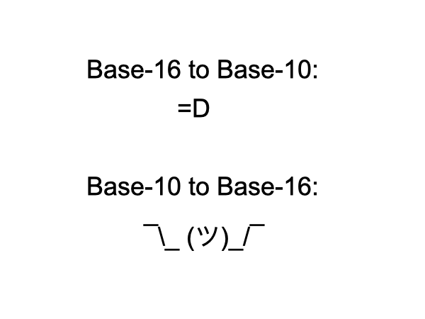
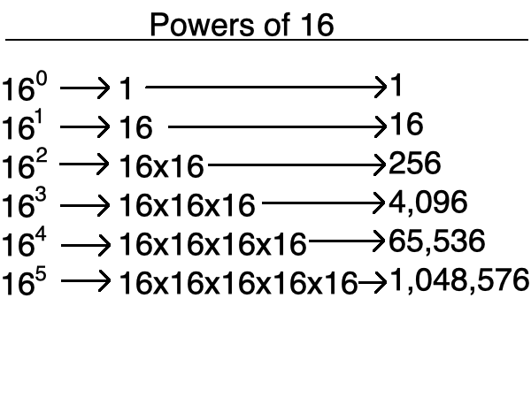
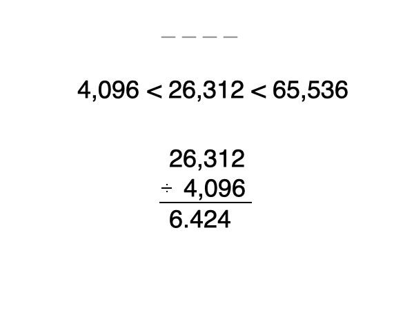
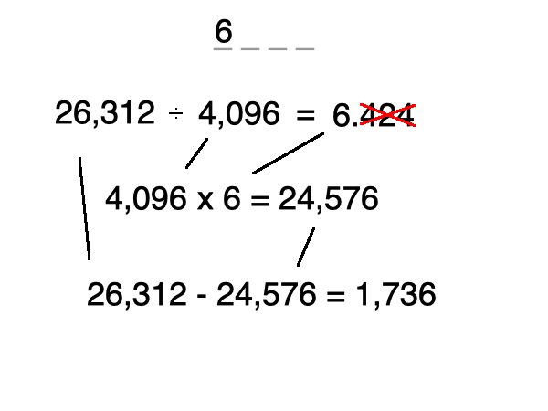
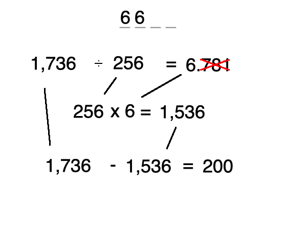
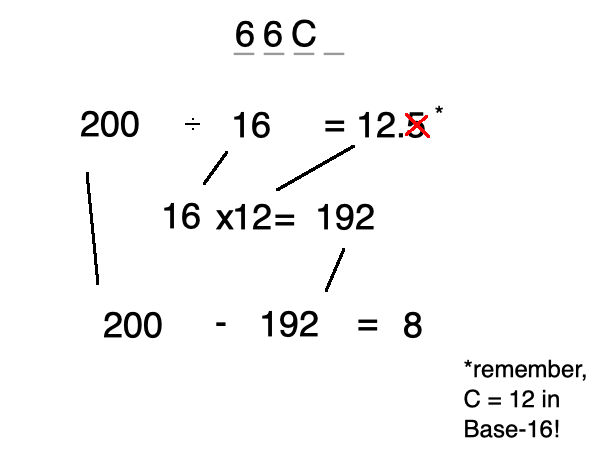
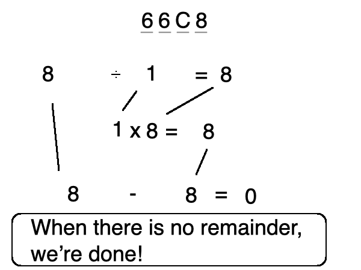

you smart good
Programming Concepts
Converting Base-10 to hexadecimal
We've examined how to convert Base-16 sequences to Base-10. Now let's learn how to convert Base-10 to Base-16!
We know that A-F are 10-15, but let's take a look at some larger numbers.
There is a lot to do to convert into Base-16. But fret not, you'll get it!

Let's convert the Base-10 number 26,312 into hexadecimal.
First, let's review the powers of 16. What is the largest power of 16 that fits into 26,312 without going over?

If you said 163, then you are correct!
4,096 goes into 26,312 without going over, and 65,536 does not fit into 26,312. so 163 is correct.
Now we know that 163 will be the largest power we will work with. This means that the Base-16 number will extend to the 4,096s place. So our Base-16 sequence will have four numbers.
How many times does 4,096 fit into 26,312? There will be a remainder, that's okay.

4,096 fits into 26,312 six whole times. This means that our Base-16 number will have a 6 in the 4,096s column. There is a remainder, but we are going to ignore it for now. We are only concerned with the whole number.
Now we are going to multiply 4,096 and 6, for a product of 24,576.
Then we subtract 24,576 from 26,312. This gives us a remainder of 1,736.

We can follow the same process with the remaining balance of 1,736 to determine what symbol will be in the 256s column.
How many times does 256 fit into 1,736? Six whole times. So we now know that the 256s column will have a 6 in its place.
Now we multiply 256 by 6, for a product of 1,536. This value will be subtracted from 1,736.
We now have a remaining balance of 200.

Now we continue with the remainder of 200. 16 goes into 200 12 whole times.
In Base-16, the value of 12 is represented with C, so the sixteens column will contain a C.
16 x 12 equals 192, so we can subtract that total from 200.
Our remaining balance is now 8.

Now we have a remaining balance of 8. We can either follow the same process, or we can simply put an 8 in the ones column. This will make it so there is no remaining balance to carry over.
When there is no remaining balance, we are done.
We now know that 26,312 in Base-10 equals 66C8 in hexadecimal!
